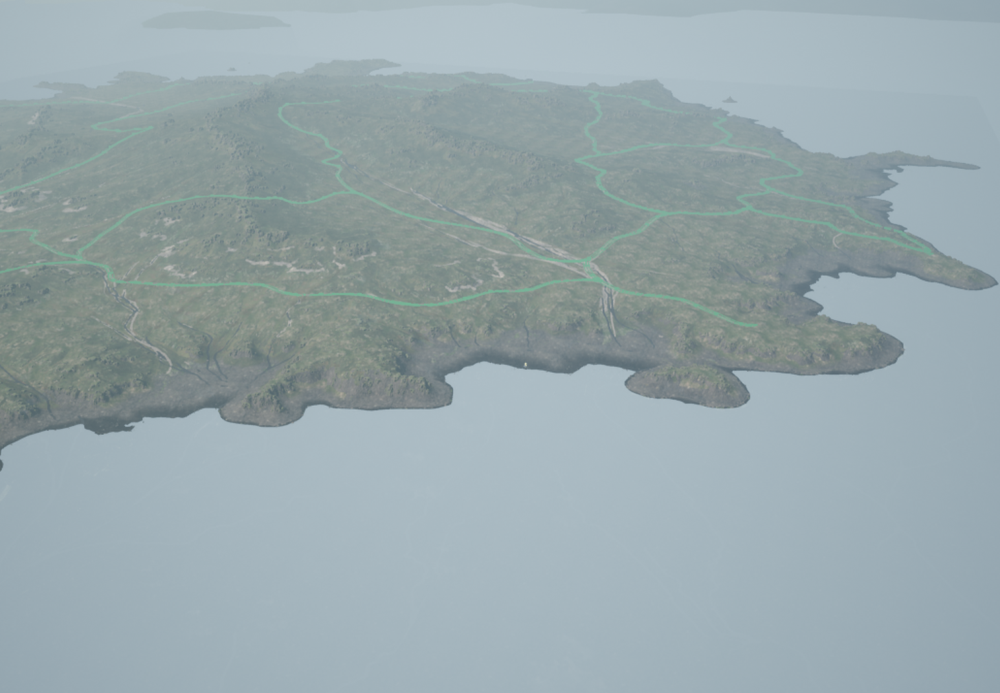
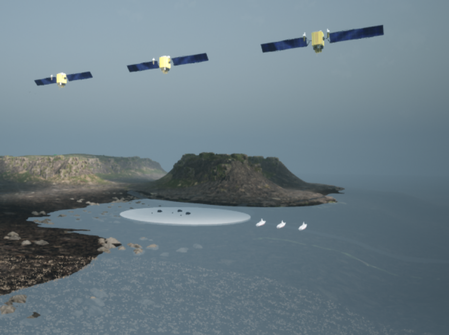
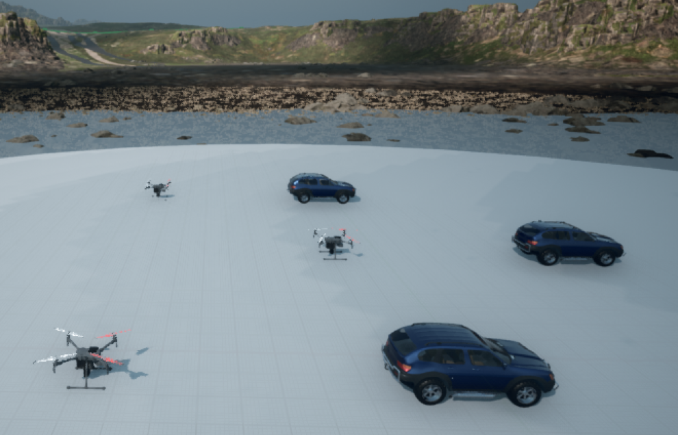
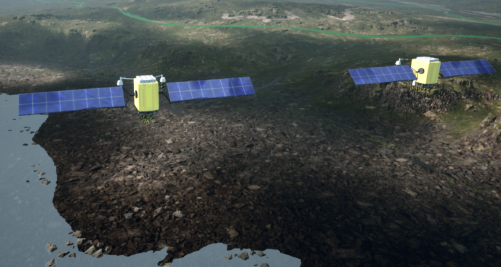
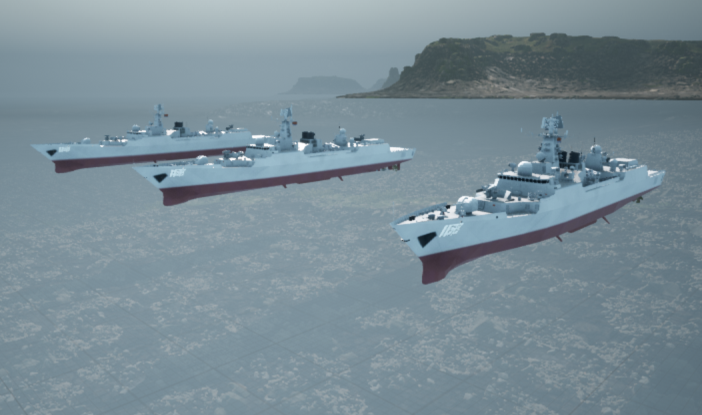

4类协同载具
5个独立 RPC 端口
2种通信后端
1套统一场景配置

统一载具体系
从单类仿真扩展到空天地海协同
LAESim 的 AirGround 模式允许不同载具共享场景、传感器与任务时间线，同时保持各自独立的控制接口和 RPC 端口。
- 无人机SimpleFlight 与多机控制
- 车辆PhysXCar 与地面任务
- 舰船简化三自由度水面运动
- 卫星三维速度控制与空间协同
SceneMap
让卫星图成为可计算的仿真场景
将图片加载为可碰撞平面地图，建立像素、局部米制坐标与 GPS 之间的转换关系，让载具按真实地理位置出生和协同。
01导入图片任意长宽比的卫星图或任务地图
→
02设置比例尺定义每个像素对应的实际距离
→
03GPS 配准通过 GeoReference 对齐经纬度
→
04运行任务按像素、米制坐标或 GPS 部署载具
仿真画面
从单类编队到多域协同
以下画面均来自 LAESim 当前开发版本，用于展示不同类型载具在统一岛屿场景中的运行状态。



视频演示
查看 LAESim 场景运行效果
通过实际录制画面了解岛屿环境、多类型载具和协同场景的整体效果。
可复现工程
从源码构建到实验验证
- 1选择配置
从混合载具、SceneMap 和传感器模板开始。
- 2启动场景
在 UE 4.27 中运行 LAESim 并确认各 RPC 端口。
- 3连接算法
使用 Python API，或在 WSL2 中连接 ROS Noetic。
- 4加入网络
按实验需要在理想通信与 ns-3 后端之间切换。
团队与联系
由空天网络与智能感知重点实验室开发维护
LAESim 由哈尔滨工业大学（深圳）广东省空天网络与智能感知重点实验室持续开发，欢迎试用、反馈问题并开展科研合作。
实验室负责人
张霆廷
梁天豪
主要贡献者
平雨奇
吴俊炜
雷光宇